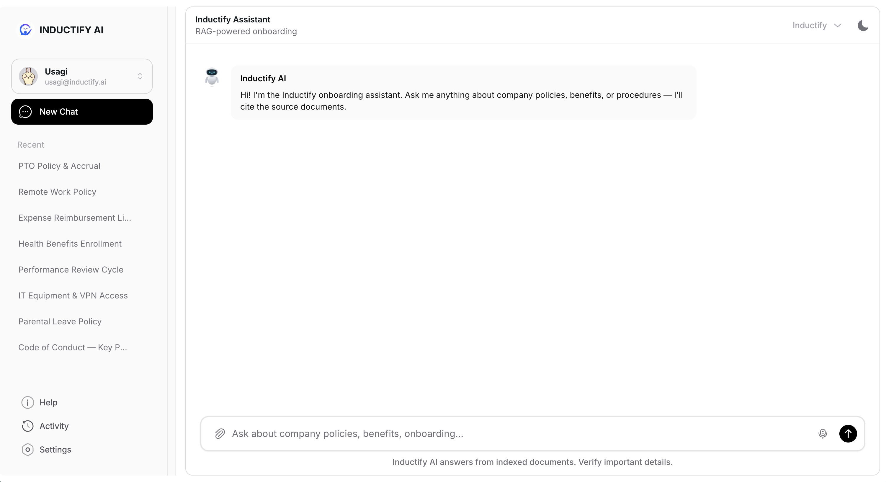
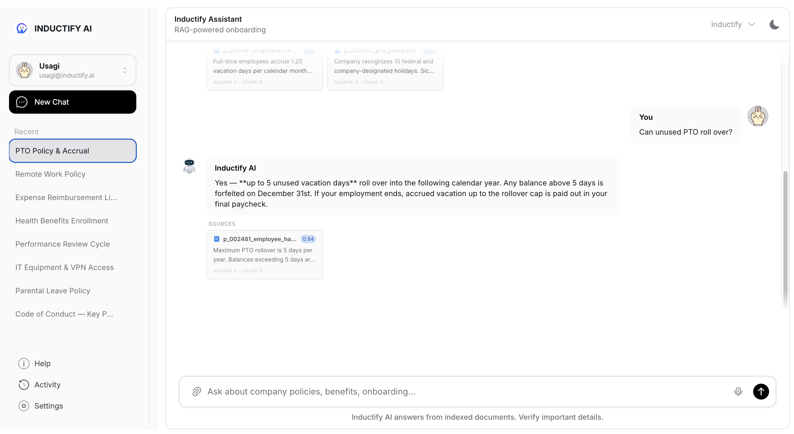
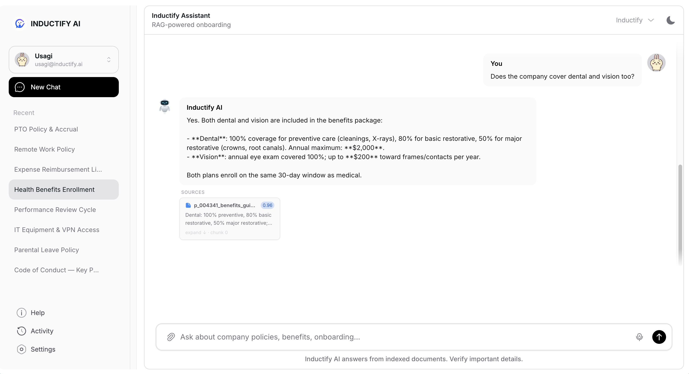
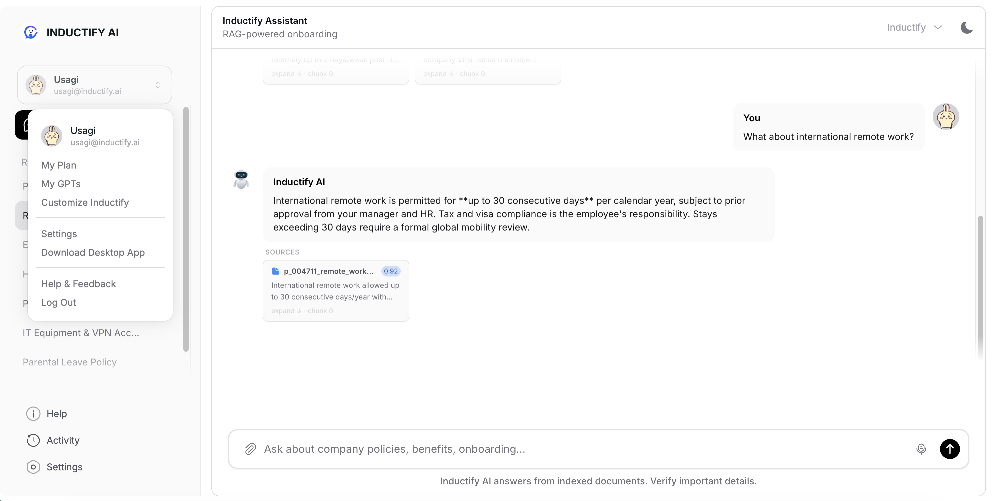
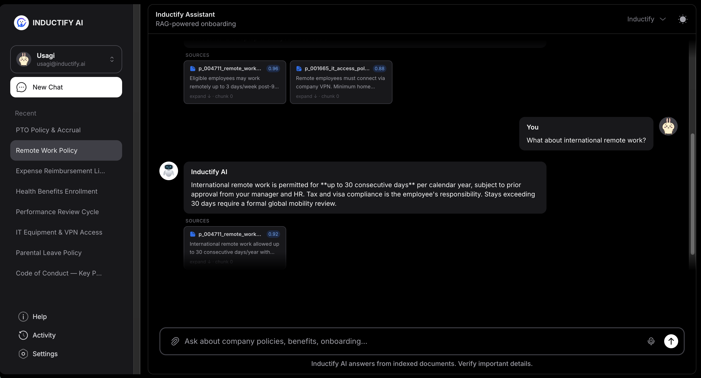
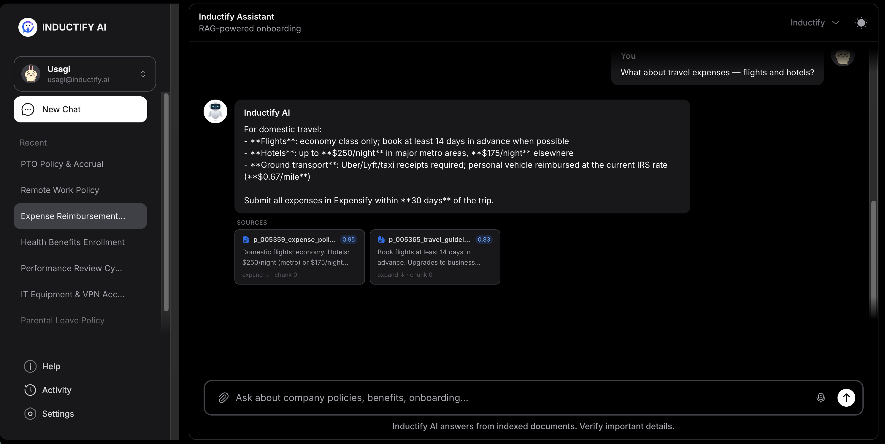

Onboarding Workspace
A chat-first interface gives employees a direct place to ask questions about policies, benefits, and procedures.
LangChain RAG onboarding assistant
Inductify lets new hires query 10K+ internal policy documents and receive grounded answers with source citation cards. I designed the retrieval and generation pipeline around fast Q&A, document indexing, and evaluation-driven improvements to answer quality.

The interface is built around a familiar chat workspace: conversation history, source-backed answers, document upload, dark mode, and clear onboarding prompts.

A chat-first interface gives employees a direct place to ask questions about policies, benefits, and procedures.
Answers include retrieved source snippets and confidence scores, making policy responses easier to verify.

The assistant handles common onboarding questions such as PTO, health benefits, remote work, and reimbursements.

Recent conversations and profile actions keep the workflow familiar while preserving multi-turn onboarding sessions.

The UI supports light and dark themes, keeping the assistant comfortable for long policy-review sessions.

Retrieved context helps the assistant answer detailed questions about limits, eligibility, timelines, and required receipts.
Inductify separates the chat UI from the retrieval and generation layer. A modular FastAPI backend exposes RESTful endpoints for real-time Q&A and asynchronous document indexing, while the RAG pipeline uses OpenAI embeddings, ChromaDB vector search, and an optional CrossEncoder reranker before generation.
Employees upload txt, md, PDF, or xlsx files for indexing through the chat interface.
FastAPI chunks documents, creates OpenAI embeddings, and stores vectors in ChromaDB.
LangChain retrieves top-k chunks and a CrossEncoder reranker improves source relevance before generation.
Offline tests track top-3 accuracy and compare LLM-only answers against the full RAG pipeline.